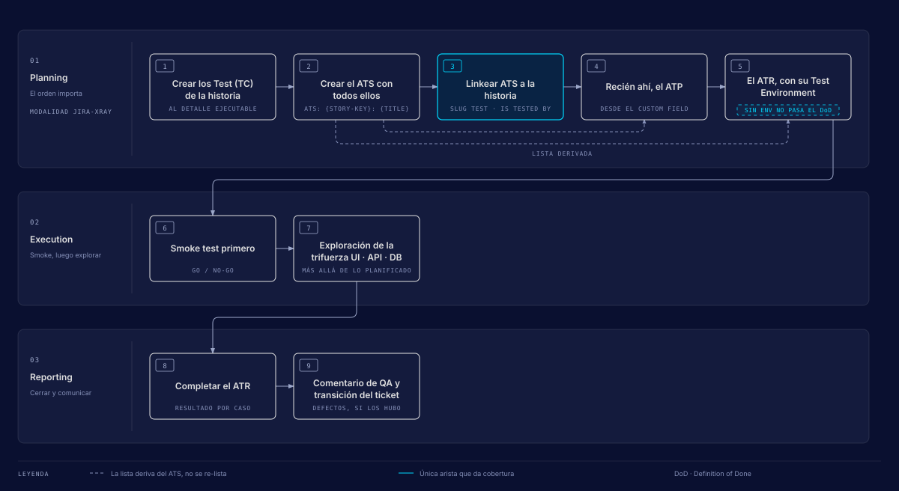
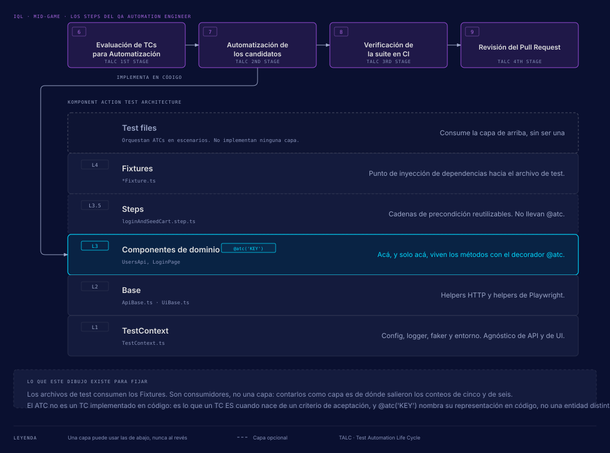

Mid-Game: detección
La segunda fase del IQL cubre los steps 5 a 9 y la protagoniza el QA Automation Engineer. Su pregunta es «¿el software cumple con los requerimientos?». Aquí se decide qué casos merecen persistir y cuáles de ellos se automatizan, para detectar defectos antes del release.
Esta página resume la sub-página upexgalaxy.com/metodologia/mid-game. Si algo de aquí no coincide con el sitio, manda el sitio. La versión en inglés está en upexgalaxy.com/en/methodology.
La fase en una tabla
| Pregunta | «¿El software cumple con los requerimientos?» |
|---|---|
| Enfoque | Detección: encontrar defectos antes del release con testing estructurado |
| Rol protagonista | QA Automation Engineer |
| Alcance | Steps 5-9 |
| Enfoques integrados | Continuous Testing, Agile Testing, AI-Driven |
| Herramientas | Playwright, GitHub Actions (o CI equivalente), Docker, Xray |
Los stages de esta fase
Los dos stages del Mid-Game ocurren en el cierre y release del sprint, con nivel L3 · Continuous Detection. Documentation empieza en el Early-Game (step 4) y termina aquí. Automation es el único stage del IQL con verificación separada obligatoria.
Documentation
Sobre comportamiento ya validado, cada escenario recibe exactamente un veredicto y solo se persisten los que demostraron valor de regresión. La mayoría tiene que caer en Deferred.
| Etapas | TMLC 3rd, TMLC 4th, TALC 1st (steps 4, 5 y 6) |
|---|---|
| El agente hace | Deriva los escenarios por técnica, calcula el ROI y propone Candidate, Manual o Deferred, exactamente uno por escenario. Persiste en el TMS solo los que valen para regresión, con la cascada de enlaces armada y el ATS enlazado a la historia. |
| La persona firma | Cada veredicto de ROI, la épica de regresión y el Test Set de feature. El veredicto no se delega: define la suite de los próximos años. |
| Evidencia exigida | Score de ROI por escenario con su justificación, y la alarma disparada si más de la mitad cae en Candidate o Manual (señal de que el filtro no se aplicó). |
| Autonomía | 2 de 5 |
| Verificador separado | Recomendado (un segundo agente) |
| Roles | QA Analyst, QA Lead · Executor, Verifier |
| Salidas | TC / ATC persistidos en el TMS; veredicto de ROI por escenario; TS de feature (opcional) |
| Transiciones en Jira |
TC: Draft → In Design (start design) TC: In Design → READY (ready to run) TC: READY → In Review (automation review) TC: In Review → Candidate (approve to automate) TC: READY → MANUAL (for manual) |
Automation
Solo entran los Candidate. Primero el plan, después el código, y tres verificadores en verde antes del pull request.
| Etapas | TALC 2nd, TALC 3rd, TALC 4th (steps 7, 8 y 9) |
|---|---|
| El agente hace | Escribe el plan (especificación y plan de automatización), implementa sobre la arquitectura del Implementation Standard con el decorador que ata cada método a su caso, corre los tres verificadores y abre el pull request. |
| La persona firma | Aprueba el plan antes de que se escriba una línea de código y aprueba el merge. Al tercer intento fallido decide si se sigue o se para. |
| Evidencia exigida | Tests en verde, tipos y lint limpios, cada decorador resolviendo a un ticket real y el manifiesto fresco. |
| Autonomía | De 2 a 3, con techo dentro del plan aprobado |
| Verificador separado | Obligatorio: pr-review-lead y judgment-day |
| Roles | QA Automation Engineer, QA Lead · Executor, Verifier |
| Salidas | Métodos automatizados con su decorador de trazabilidad; pull request revisado |
| Transiciones en Jira |
TC: Candidate → In Automation (start automation) TC: In Automation → Pull Request (create PR) TC: Pull Request → AUTOMATED (merged) |
El gate de ROI: Candidate, Manual o Deferred
El veredicto de ROI se decide en el step 4, sobre escenarios que ya se ejecutaron y se reportaron. Solo lo que demostró valor de regresión llega al TMS.
| Veredicto | Qué pasa con el escenario | Estado del TC en Jira |
|---|---|---|
| Candidate | Regresión automatizada. Pasa al TALC y se implementa con Playwright. | In Review → Candidate (approve to automate) |
| Manual | Regresión manual. Es terminal: no se automatiza. | READY → MANUAL (for manual) |
| Deferred | Fuera de la regresión. Queda en el reporte de priorización. | No se crea TC |
Si más de la mitad de los escenarios cae en Candidate o Manual, el filtro no se aplicó y se vuelve a correr la fase de descarte. Una suite crece sana cuando la mayoría de lo explorado no se persiste. Para este stage se recomienda un verificador separado.
Veredicto y estado comparten nombre (Candidate y MANUAL en el TC, Deferred en el Bug), pero el veredicto es la decisión de ROI y el estado es dónde está el ticket.
Los 5 steps del Mid-Game
El Mid-Game cierra el TMLC (Test Manual Life Cycle) con su 4ª etapa y recorre entero el TALC (Test Automation Life Cycle): Evaluación, Automatización, Verificación CI y PR Review.
| Step | Etapa | Qué se hace | Entregable | Transición del TC |
|---|---|---|---|---|
| 5. Documentación Asíncrona de Test Cases | TMLC 4th | Formalizar en el TMS los TC de cada escenario Candidate o Manual. | Backlog de TCs de alto valor, agrupados en el ATS de la historia | Draft → In Design → READY |
| 6. Evaluación de TCs para Automatización | TALC 1st | Revisar los TCs recién documentados: cuáles se automatizan y cuáles quedan manuales. | TCs aprobados para automatizar (Candidate) o marcados como Manual | READY → In Review → Candidate, o READY → MANUAL |
| 7. Automatización de los candidatos | TALC 2nd |
Implementar los Candidate con Playwright sobre KATA, con @atc en cada
método.
|
Casos implementados en el repo, con PR creado | Candidate → In Automation |
| 8. Verificación de la suite en CI | TALC 3rd | Validar los ATCs automatizados en la pipeline de CI. | ATCs estables en CI sin flakiness, con reportes de trazabilidad | (el sitio no indica ninguna) |
| 9. Revisión del Pull Request | TALC 4th | Crear el PR para revisión y aprobación de los ATCs. | PR mergeado, ATCs integrados en CI/CD | In Automation → Pull Request → AUTOMATED |
Step 5 depende de la modalidad del TMS
El verbo del step 5 cambia con la modalidad. En jira-native aquí se
crean los TC, porque un issue Test nativo ya es documentación y por eso
espera al gate de ROI. En jira-xray (la instancia de UPEX) los Test existen
desde Planning y aquí se enriquecen y promueven: Gherkin rico, label
regression-candidate, Test Set de la feature y Regression Test Plan. En los dos
casos la documentación es asíncrona a propósito: va después de ejecutar y reportar, nunca
antes.
El TC es el caso individual y vive en el TMS. Un ATC es lo que un TC es cuando nace de un criterio de aceptación. Los casos de la historia se agrupan en su ATS (Acceptance Test Set), obligatorio incluso con un solo caso, porque la cobertura la da el enlace del ATS a la historia.
Herramientas por step
| Herramienta | Tipo | Nota |
|---|---|---|
| KATA | Recommended |
Hace trazable cada ATC a su historia (@atc('KEY')) y es lo que los
skills saben operar. Sobre un framework que el cliente conserva se aplican sus
invariantes (capas, inyección de dependencias, decoradores) con
/adapt-framework, sin reescribirlo.
|
| Playwright | Recommended | El default al automatizar desde cero. No es obligatorio: un stack maduro (Cypress, WebdriverIO) se evalúa al inicio y se conserva, se adapta o se migra por etapas. |
| Docker | Recommended | Reproducibilidad de la corrida en CI con la imagen oficial de Playwright. Si el CI ya trae runners con navegadores, se adapta. |
| Xray | Adaptable |
La modalidad con la que opera UPEX (jira-xray). El boilerplate arranca
en jira-native (tms_cli: null), también soportada. Otro
TMS (TestRail, Zephyr) se evalúa como adaptación.
|
| Harness agéntico | Adaptable | Claude Code, OpenCode o Codex. El método vive en los skills, no en el agente. |
| GitHub Actions (o CI equivalente) | Client-controlled | El estándar exige que los ATCs corran en cada PR. El pipeline de referencia del boilerplate está escrito para GitHub Actions. |
| GitHub / GitLab, Jira, Slack / Teams | Client-controlled | Repositorio y PRs, tracker y canal de avisos: los trae el cliente. |
Los casos primero, el plan después
El set de casos de la historia se crea antes que su plan y que su ejecución, porque los dos
derivan su lista de él. Y la cobertura en Jira la da el enlace del set a la historia, no el
del plan. El orden set-first es TC → ATS → ATP → ATR, y el diagrama muestra
cómo lo aplica /sprint-testing en la modalidad jira-xray.

/sprint-testing y el orden exacto de la planificación.
Ver a tamaño completo.
-
Crear los Test (TC) de la historia
Al detalle ejecutable.
-
Crear el ATS con todos ellos
Título
ATS: {STORY-KEY}: {TITLE}. -
Enlazar el ATS a la historia
Enlace Test · is tested by. Es la única arista que da cobertura.
-
Recién ahí, el ATP
Se crea desde el custom field de la historia. Su lista de casos deriva del ATS.
-
El ATR, con su Test Environment
Sin entorno no pasa el Definition of Done. Su lista también deriva del ATS.
-
Execution: smoke primero, después exploración
Go/No-Go del entorno y luego la Trifuerza UI · API · DB, más allá de lo planificado.
-
Reporting: completar el ATR y comentar
Resultado por caso, comentario de QA y transición del ticket, con defectos si los hubo.
KATA (Komponent Action Test Architecture)
El step 7 implementa los casos candidatos sobre una arquitectura por capas: cuatro capas
nombradas, más Steps como capa opcional, con una sola dirección de dependencia. Una capa
puede usar las de abajo y nunca al revés. Dos advertencias: las letras del acrónimo no son
las capas, y el decorador @atc no crea un artefacto nuevo. Nombra la
representación en código del mismo caso que ya existía en el gestor de pruebas.

| Capa | Nombre | Ejemplo | Qué contiene |
|---|---|---|---|
| (consumidor) | Test files | Orquestan ATCs en escenarios y consumen los Fixtures. No son una capa. | |
| L4 | Fixtures | *Fixture.ts |
Punto de inyección de dependencias hacia el archivo de test. |
| L3.5 (opcional) | Steps | loginAndSeedCart.step.ts |
Cadenas de precondición reutilizables. No llevan @atc. |
| L3 | Componentes de dominio | UsersApi, LoginPage |
Aquí, y solo aquí, viven los métodos con el decorador @atc('KEY').
|
| L2 | Base | ApiBase.ts · UiBase.ts |
Helpers HTTP y helpers de Playwright. |
| L1 | TestContext | TestContext.ts |
Config, logger, faker y entorno. Agnóstico de API y de UI. |
Contar los archivos de test como una capa más es el origen de los conteos de cinco y seis
capas que circulan. Un ejemplo de decorador es @atc('PROJ-101'): ata el método
a su caso en Jira.
Dónde conviene poner el esfuerzo
Automatizar todo al nivel de interfaz es la forma más cara de tener una suite frágil. La pirámide reparte el esfuerzo: mucha prueba barata abajo, poca prueba cara arriba y, en el medio, lo que verifica que las piezas se hablen.
| Nivel | Proporción | Qué verifica | Ejemplos |
|---|---|---|---|
| E2E UI Tests | 10% | El flujo completo desde la interfaz, como lo haría una persona. Los más lentos y los que más cuesta mantener. | Login, compra de punta a punta, registro de usuario |
| Integration / Service Tests | 20% | Cómo hablan entre sí componentes y servicios, sin pasar por la interfaz. Velocidad media, buena cobertura. | Integración de APIs, operaciones contra la base, comunicación entre servicios |
| Unit Tests | 70% | Funciones y componentes aislados. Los escribe quien desarrolla y corren en segundos. | Validación de funciones, componentes aislados, lógica de negocio |
Enfoques y herramientas de la fase
- Continuous Testing
- Testing automatizado integrado en la pipeline, que corre con cada cambio.
- Agile Testing
- Ciclos de prueba que caben dentro del sprint y no lo empujan hacia adelante.
- AI-Driven
- IA aplicada a acelerar el análisis, la documentación y la cobertura.
| Herramienta | Para qué en esta fase |
|---|---|
| Playwright | El runner de los casos automatizados, base de la arquitectura KATA. |
| GitHub Actions (o CI equivalente) | La pipeline donde la suite corre en cada cambio y se comprueba que no sea flaky. |
| Docker | El entorno reproducible: la suite corre igual en la máquina del QA que en CI. |
| Xray | El TMS donde el caso vive, cambia de estado y se agrupa en el ATS de su historia. |
En este repo
| Stage | Skill |
|---|---|
| Documentation (steps 4-6) | /test-documentation |
| Automation (steps 7-9) |
/test-automation, con /pr-review-lead y
/judgment-day como verificadores
|
La frontera entre los dos stages es el veredicto estampado con approve to automate
(In Review → Candidate). El registro de componentes y ATCs que existen es
kata-manifest.json, en la raíz del repo, y el DoD de cada stage está en
.agents/skills/agentic-qa-core/references/stage-gates.md. Más detalle en
El IQL en este repo.